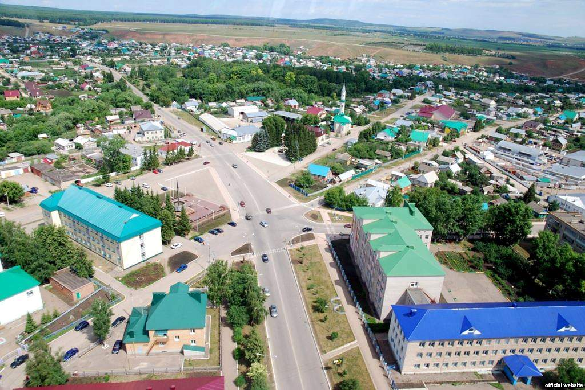

Азнакаевский район

Город Азнакаево расположен в Прикамье, на склонах Бугульминско-Белебеевской возвышенности, на р. Стярля (левый приток р. Ик). В природном отношении это часть лесостепной зоны Восточного Закамья.
Рельеф — возвышенная равнина.
Характеризуется ярусностью, структурностью и резко выраженной асимметрией склонов. Расположенная в преддверии Уральских гор, на Бугульминском плато,
территория занимает северо-восток Бугульминско-Белебеевской возвышенности (Гора Чатыр-Тау — достопримечательность района — является ее неотъемлемой частью.)
и охватывает участок левобережья широкой Икской долины с прилегающим Икско-Заинским водоразделом.
Район на востоке граничит с Бакалинским и Шаранским районами Башкортостана, на севере — с Сармановским и Муслюмовским, на западе и юго-западе — с Альметьевским,
на юге — с Бугульминским, на юго-востоке — с Ютазинским районами Татарстана.
Территория Азнакаевского района 2141 кв км. Занимает по площади пятое место после Альметьевского, Лаишевского, Мамадышского и Нурлатского районов.
Центр района — Азнакаево. Город республиканского подчинения. Расположен на реке Стярле. Ближайшие железнодорожные станции (линия Ульяновск-Уфа): Ютаза в 34, Бугульма в 40 км. Расстояние до Казани 376 км.
Автодорожный узел межрайонного значения.
К 1859 году — село (213 хозяйств).
Волостной центр — с 1861 по 1930 гг. Центр Азнакаевского сельского Совета — в 1930—1956 гг. С 14 июня 1956 года — поселок городского типа. С 20 марта 1987 года — город.